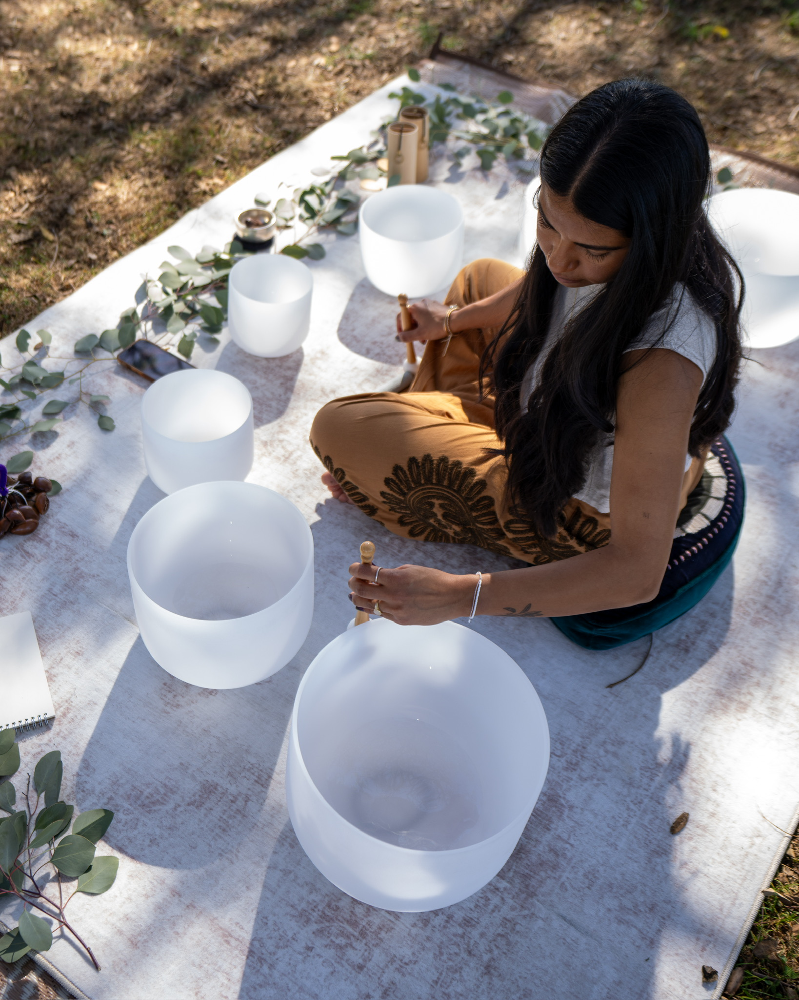
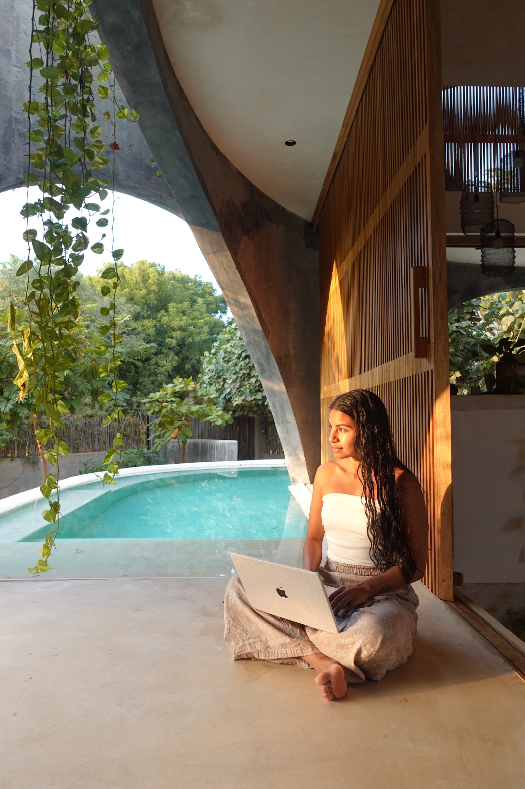
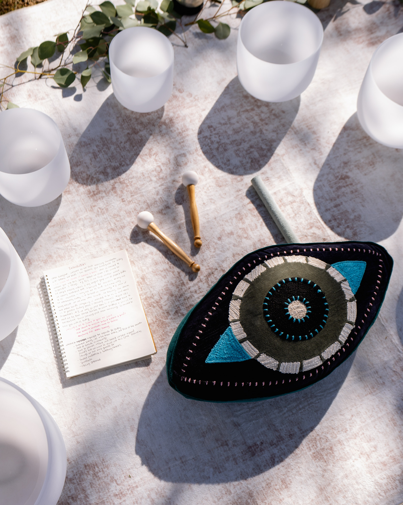
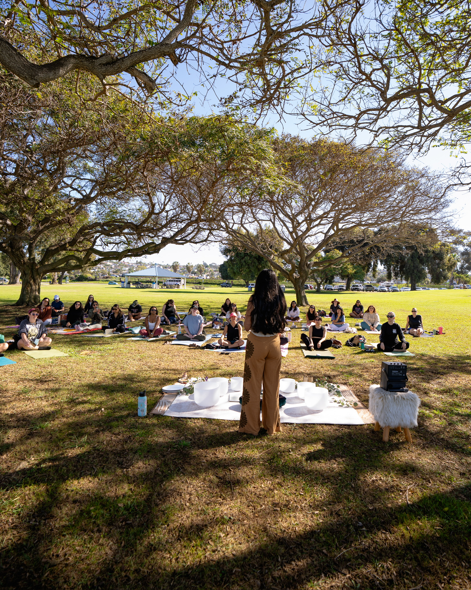
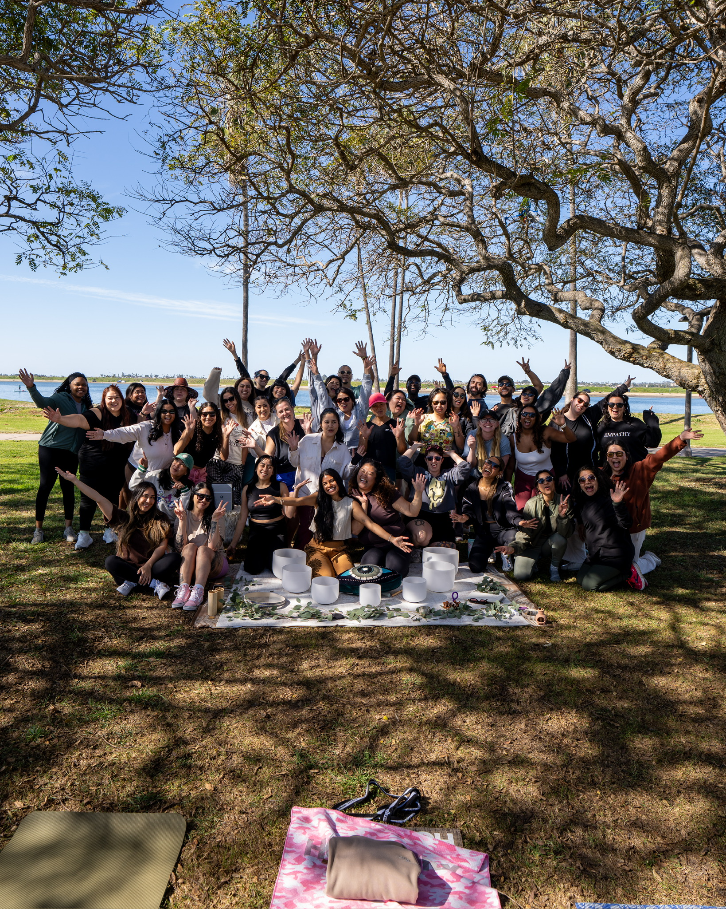
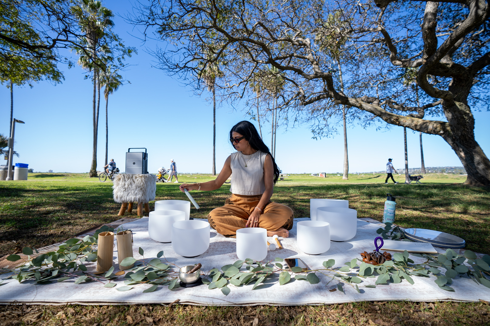
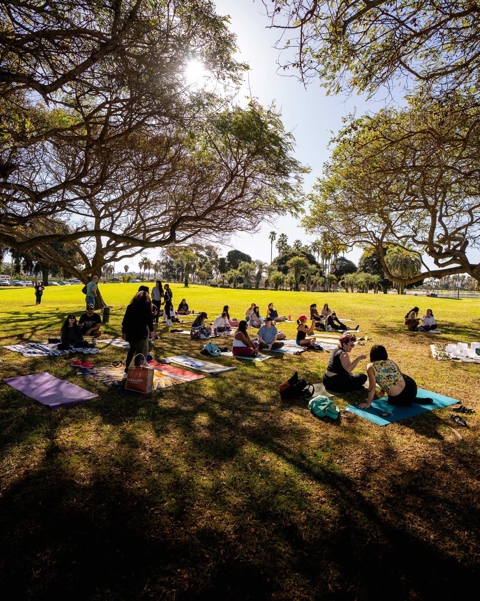
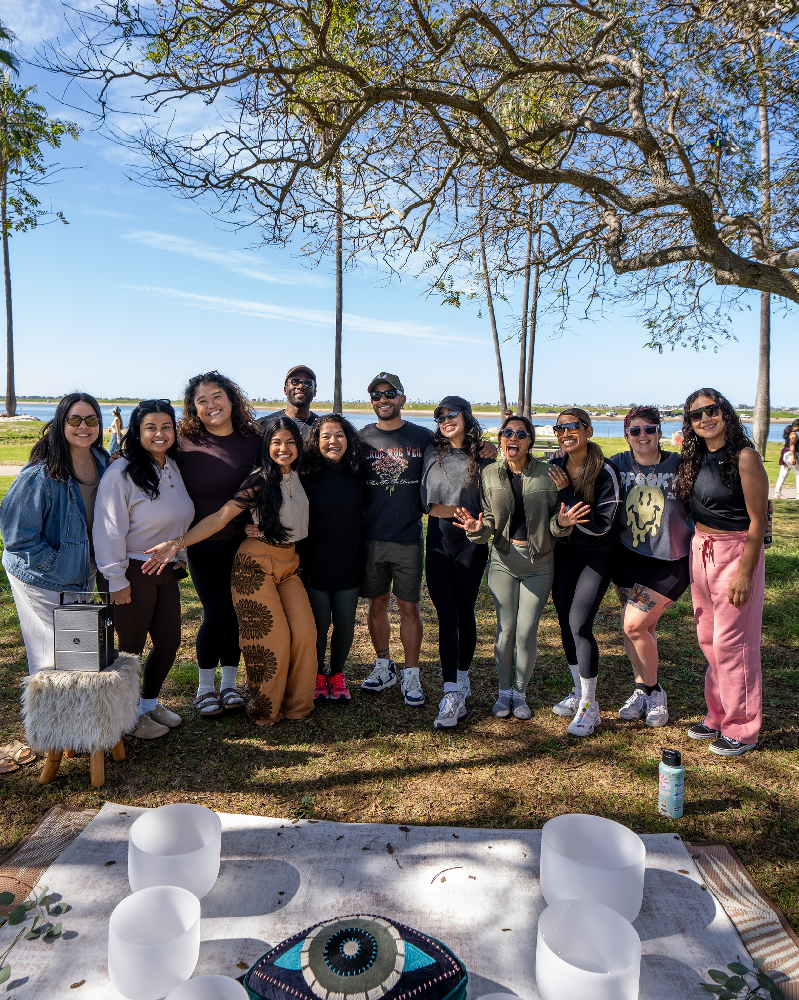
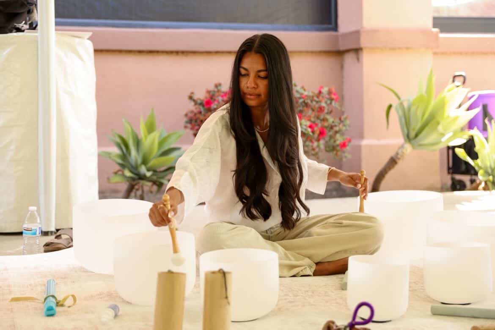
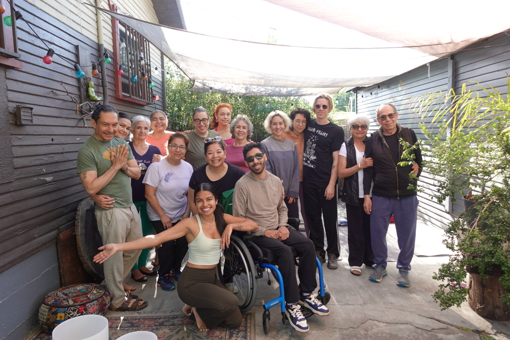

Past Clients


Blancawaves was born from weaving together my passion for radical community care, internal transformation, and coming as we are. Healing moves like waves, not linear, but rhythmic, collective and alive.
I am a child of immigrant parents from El Salvador, raised in the heart of Los Angeles, and made my way down the coast to San Diego. As a licensed mental health therapist, I find deep purpose in helping communities rediscover a new relationship with rest and reclaiming wholeness.
This space exists because healing was never meant to be done alone. Because community is medicine. Because we deserve a third space—outside of work, outside of home—where we can exhale, soften, and remember who we are together.
This is ours.
And if you're here, it's yours too.


Soundbaths found me during a season when I needed something slower than talk, softer than survival. It became a language for what my body was holding when words fell short—grief, joy, exhaustion, hope. Over time, it stopped being just a personal practice and turned into a shared offering.
What to expect during a soundbath: a shared space to gently relax and restore your nervous system, prompting deep relaxation, mental clarity, and balance. Being immersed in the soothing sounds and frequencies of the crystal singing bowls, chimes, or ocean drums will guide you to a meditative state. Your mind, body, and spirit will thank you.
Experience a personalized journey of deep relaxation and energetic renewal, tailored just for you — perfect for birthdays, bachelorettes, and meaningful gifts.
Gather in community and let soothing vibrations guide you into collective calm and harmony. Open to community events, women’s circles, corporate spaces, and classrooms.
Immerse yourself in a restorative escape where sound, nature, and mindful practices nourish your body and soul.






